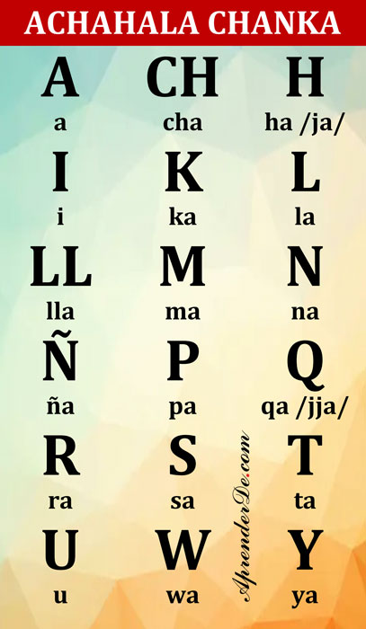

Siguiente
Imaynalla kachkanki, allinllachu?
(Como estas, bien?) Me da mucho gusto que desees
aprender este hermoso idioma,
en esta lección aprenderemos sobre el
alfabeto del quechua chanka y la pronunciación de sus letras.
Qallarisun! (Empecemos!)
I. Alfabeto del quechua chanka – Achahala
El alfabeto quechua consta de: 3 vocales,
13 consonantes y 2 semiconsonantes
(las semiconsonantes actúan como consonantes,
pero tienen un sonido vocálico)
A-CH-H-I-K-L-LL-M-N- Ñ-P-Q-R-S-T-U-W-Y
Las semivocales W y Y tienen un sonido vocálico,
pero se las trata como consonantes en la gramática,
lecciones más adelante veras como tratamos a estas
letras.

El alfabeto (achahala) chanka con el nombre de cada letra
II. Pronunciación
La ventaja que tiene el quechua chanka es que tiene sonidos muy fáciles para el hispanohablante,
por lo que aprender la pronunciación te resultara muy fácil.
Solamente te en cuenta estos puntos importantes:
a. Entonación – La fuerza de voz
En español tenemos palabras agudas, graves, esdrújulas y sobresdrújulas,
dichas categorías nos indican donde poner la mayor fuerza de voz en una palabra.
Lo bueno del quechua es que casi todas las palabras son graves
(mayor fuerza de voz en la penúltima silaba) y un pequeño porcentaje
son agudas (mayor fuerza de voz en la ultima silaba).
Otra ventaja es que todas las palabras agudas en quechua llevan tilde,
de modo que no hay manera de confundirse al momento de pronunciar una palabra quechua.
En estos ejemplos te resalto la silaba con la mayor fuerza de voz.
Palabras graves, la gran mayoría de palabras quechua están en esta categoría.
✔Chaska: Estrella
✔Qullqi: Dinero, plata
✔Yanapay: Ayudar
Palabras agudas, un pequeño porcentaje de palabras quechua está en esta categoría,
se las puede identificar fácilmente por el uso de la tilde:
✔Taytáy: Mi papá
✔Mamáy: Mi mamá
b. Idioma aglutinante
Esto quiere decir que el quechua es un idioma donde las ideas se forman añadiendo sufijos a raíces,
de modo que en base a la misma raíz se pueden obtener palabras largas de bastantes silabas,
esto no afecta a la pronunciación, pues las palabras casi siempre serán graves (fuerza de voz en la penúltima silaba) o
agudas (fuerza de voz en la ultima silaba, se identifican por llevar tilde)
Veamos un ejemplo, veamos como se puede declinar una raíz añadiéndole sufijos,
en rojo se indica la silaba que lleva la mayor fuerza de voz:
✔Yanapaq: Ayudante
✔Yanapaqnin: Su ayudante
✔Yanapaqninkuna: Sus ayudantes
✔Yanapaqninkunachá: Probablemente sus ayudantes
c. El caso de la LL, la Q y -CHKA
Estas dos letras tienen sonidos que no están en el español
(la LL si, pero su pronunciación al estilo quechua se usa normalmente solo en los andes)
La explicación del sonido de la LL se da muy bien en esta pagina:
«Pronunciación Quechua«
La Q se pronuncia como una J intensa, enfatizada y reforzada;
para un hispanohablante probablemente sea imperceptible la diferencia entra la J (H en quechua) y la Q,
pero dicha diferencia existe y se nota para el oído quechua, sin embargo,
no te preocupes demasiado en pronunciar perfectamente esta letra, recuerda esto:
Para que se te entienda es mejor trabajar la fluidez que la pronunciación perfecta.
Otra cosa que debes de tener en cuenta respecto a la Q es que aunque en quechua solo existen 3 vocales,
la U y la I se pronuncian como O y E cuando anteceden o preceden a la Q, pero siempre se escribe solo como U e I.
El sufijo -CHKA se pronuncia como se haría en español,
aunque, normalmente la CH en español no va sola,
imagínate la palabra ¡OUCH!, ese seria el inicio del sonido -CHKA.
Este es un sufijo que indica el tiempo continuo,
siempre va antecedido de una raíz verbal y precedido de un sufijo de terminación verbal.
Otra cosa que te puede ayudar a pronunciar esto es recordar la palabra YUYACHKANI,
el cual es el nombre de la famosa casa teatro que esta en Lima.
III. Palabras con cada letra del Achahala
Aquí te muestro una lista de palabras con cada una de las letras del Achahala Chanka.
En algunos casos te pondré algunas palabras entre barras // la pronunciación de la palabra,
pues a veces la pronunciación es un poco diferente a la escritura, esto principalmente se da con la letra Q.
Tambien pongo en rojo la silaba que lleva la mayor fuerza de voz.
A
✔Allin: Bien, bueno
✔Allqu /Allqo/: Perro
CH
✔Churay: Poner
✔Chaki: Pie
H
✔Hamuy: Venir
✔Huqariy /Hoqariy/: Levantar, alzar
I
✔Inti: Sol
✔Ispana: Urinario, letrina
K
✔Kallpa: Fuerza
✔Kawsay: Vivir
L
✔Lawa: Sopa cremosa
✔Lirpu: Espejo
LL
✔Llama: Llama
✔Llimpi: Color
M
✔Mama: Mamá
✔Mikuna: Comida
N
✔Napaykuy: Saludar
✔Nanay: Dolor
Ñ
✔Ñaña: Hermana (de una mujer)
✔Ñan: Camino
P
✔Pani: Hermana (de un varón)
✔Pillpintu: Mariposa
Q
✔Qullqi /Qollqe/: Dinero, Plata
✔Qillqay /Qellqay/: Escribir
R
✔Raymi: Fiesta
✔Rikchay: Despertar
S
✔Sara: Maiz
✔Sipas: Joven mujer
T
✔Takiy: Cantar
✔Tusuy: Bailar
U
✔Uchpa: Ceniza
✔Ukucha: Ratón, pericote
W
✔Waranqa: Mil, un millar
✔Wichqay: Cerrar
Y
✔Yachachiq: Profesor
✔Yupay: Contar